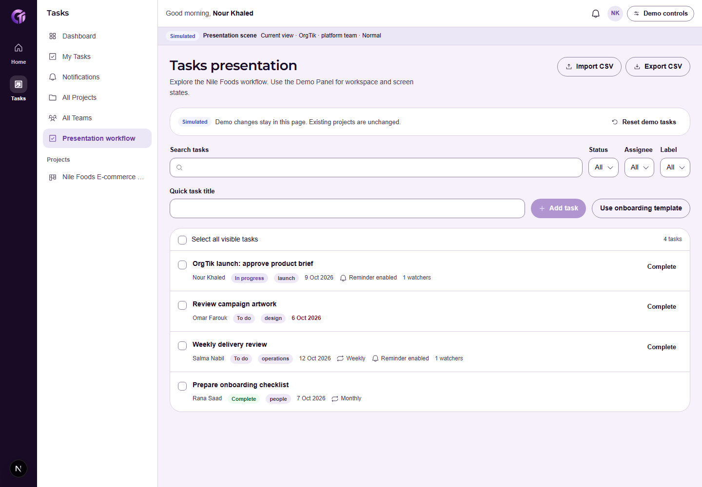

نبني على اللي اتعمل
اشتراكات ومقاعد وصلاحيات workspace حقيقية جوه الـ mock. بيانات منفصلة لكل عميل، وFiles references وboards، وربط الإجازات والـ hiring/offboarding. فحوص Storybook وRTL والحالات موجودة.
الأساس موجود، بس كتير من تجربة المنتج لسه في صفحات العرض. المرحلة الجاية تدخل الميزات في الشاشات اليومية، وتوحّد الشكل والربط حسب اشتراك كل عميل، وتفصل إدارة الخدمات عن إدارة الأدوات.
حسب التحليل: 9 ميزات في الشاشات الحقيقية، و3 متقسّمين، و60 في /presentation بس. وجود تغطية UI للـ 72 التزام مش معناه إنهم متاحين في الاستخدام العادي.
اشتراكات ومقاعد وصلاحيات workspace حقيقية جوه الـ mock. بيانات منفصلة لكل عميل، وFiles references وboards، وربط الإجازات والـ hiring/offboarding. فحوص Storybook وRTL والحالات موجودة.
البحث والجرس والمهام من الشات والمتابعة من CRM ينتقلوا من demo bridge لمصدر الأداة. الربط يشرح سبب عدم الإتاحة، والدخول يختار أداة واحدة أو Home حسب الوصول.
الدفع والبريد والـ AI والمكالمات والتوقيع والتقديم التنظيمي يفضلوا محاكاة واضحة. حدود الـ session والـ workspace والـ journal تتفضل محفوظة. مفيش نشر جديد من المرحلة دي.
الأرقام المصنّفة فوق من الخطة اللي اتبعتت، مش تدقيق تشغيل جديد لكل ميزة. مراجعة P0 أكدت من الكود شرط 404، والـ bridge المنفصل، وحدود أوامر الربط، وملكية الكتالوج. تفاصيل المراجعة.
تقييم نوعي من تحليل الخطة ومصادرها. «أساس موجود» معناها implementation محدد في الـ mock؛ كل أداة لسه محتاجة دورة نقل وقبول عادي في P4.
| الأداة | لوحدها | مع الباقي | اتساق الشكل | الحالات وأول شغل |
|---|---|---|---|---|
| Tasks | أساس المشاريع والمهام موجود؛ عمق العرض يتنقل | Files والإجازات موجودين؛ dependencies وطلبات الربط ناقصين | مكتبة مشتركة؛ أفضل pilot | Toolbar، saved views، bulk، first-run وAdmin |
| Account / SOS | عضوية ومقاعد وفواتير فعلية في الـ mock | الدخول التكيّفي وHome/feed لسه | أساس مشترك | onboarding، usage، إشعارات وتفضيلات المنصة |
| HR | hire/offboard/leave موجودين؛ self-service أوسع في العرض | people/leave موجودين؛ Projects token والـ onboarding محتاجين إصلاح | كيت وجداول وهيدر محليين | Sheet للإجازة؛ balances صحيحة؛ حالات داخل الشاشة |
| CRM / Sales | Pipeline موجود؛ الـ 8 التزامات في العرض | متابعة Tasks وlead/order intake لسه | كيت محلي وToaster مكرر | كتالوج خدمات جديد؛ activities وAdmin |
| Chats | workspace adapter موجود؛ تفاعلات كتير في العرض | Files/boards موجودين؛ مهمة من رسالة demo | styles محلية؛ مصدر ظلال ومُوشن مفيد | typing/read، قنوات وضيوف؛ إخراج الحالات من overlays |
| Files | references/versions للـ packaged records موجودة | أقوى عقد ربط حالي مع Tasks/Chats | مكتبة مشتركة | quota، comments، shared/starred/recent، Admin |
| Marketing | الـ 8 التزامات في العرض | CRM audiences/attribution لسه demo | مكتبة مشتركة | consent، sender/test send، contact records |
| SaaS Console | أساس الفوترة والكتالوج موجود؛ العمليات الموسّعة في العرض | ملكية software وconnector registry تتوضّح | مكتبة مشتركة | metrics/cohorts، دunning، exports، SLAs |
| Website Manager | مسار نشر CMS مختار متحقق محليًا | lead intake ومرايات CRM/Console محتاجين نقل | مكتبة مشتركة | autosave، comments، bundles وwebhooks محاكاة |
مصادر الحالة: خريطة الـ 72، دليل الأساس، Tasks، HR، القبول المحلي السابق.
التقسيم بيحدد مين عنده شاشة وصلاحية الإدارة. الحسابات والأسعار التاريخية والـ store ما بيتنسخوش. حساب CRM بتاع عميل ما يديهوش إدارة كتالوج OrgTik العام.
apps/salesالخدمات والخطط والمدد والباقات والأسعار لكل zone. leads، deals، customers، وطلبات الخدمة وتسليمها.
apps/adminsoftware وخططه وحدوده وتسعيره. العملاء والاشتراكات والمقاعد والفوترة والدعم والـ connectors والنظام.
apps/wmالصفحات والنصوص والميديا وSEO. مرايات الأسعار للقراءة بس، ومعاها «Managed in CRM / Console» ولينك مصرح.
نفس الشكل والـ markup. طبقة البيانات تقرأ الخطط والأسعار والنصوص المعتمدة، والـ fallback هو آخر نسخة سليمة.
Overview، members & seats، roles، settings، connections، import/export، audit، billing. للـ owner/admin أو أدمن الأداة حسب صلاحياته الحالية.
وصول لأداة واحدة: يدخلها مباشرة بعد login/handoff. أداتين أو أكتر: Home يجمع الأدوات واللي مستنيك والنشاط والـ checklist. فتح Home بإيدك ما يعملش redirect.
الاسم المقترح للوحة الداخلية: OrgTik Console. واضح ومناسب لو نطاقها كبر؛ «SaaS Console» يفضل اسم الشغل لحد اعتماد التسمية.
مثال توضيحي للاتجاه المطلوب: Attach from Files جوه Tasks. التبديل هنا بيشرح التجربة، ومش بينفذ اشتراك أو طلب حقيقي.
الأداتين متاحين، والربط شغال. يظهر picker بمراجع نسخة ثابتة وصلاحيات الملفات الحالية.
الإجراء المقترح: فتح pickerإغلاق connector أو رفض الدور يتشرحوا بسببهم الحقيقي. ما نخلطهمش مع عدم الاشتراك أو مشكلة الفوترة.
Graphite محايد للسطوح، وplum في لحظات البراند. مونتسرات للعناوين، وIBM Plex Sans / Arabic للـ UI. كثافة أعلى، borders أهدى، ظلال خفيفة، وfocus وpress واضحين.

program/audits/tasks-presentation/tasks-en-light-1440.png| Task | Status | Due date | Owner |
|---|---|---|---|
| Approve product brief | In progress | 9 Oct 2026 | Nour Khaled |
| Review campaign artwork | To do | 6 Oct 2026 | Omar Farouk |
| Weekly delivery review | To do | 12 Oct 2026 | Salma Nabil |
| Prepare onboarding checklist | Complete | 7 Oct 2026 | Rana Saad |
مفهوم توضيحي لـ P0. البيانات ونفس قائمة المهام للتوضيح. مش screenshot لتطبيق DS v2، ومش قبول G-DS1. خط Plex اللاتيني الفعلي، tokens المفحوصة، و3 specimens داخل التطبيقات يتعملوا في P1.
Pill للـ primary/chips. 8px للـ input والـ toolbar. 12px للكروت، 16px للـ overlay، 20px للألواح الكبيرة.
صف جدول 44 / 36px، وcontrol 36 / 32px. عرض محتوى 720 / 1200 / 1440 / full. مفيش صناديق متداخلة حوالين كل سطر.
80 / 120 / 180 / 240 / 320ms. press، shimmer، nav progress، وreduced motion. حلقة focus 2px مع halo ناعم.
Button/IconButton، fields/select/combobox، Dialog/Sheet/Popover/Menu، toast واحد، Badge dot، Tabs/Breadcrumb، PageHeader v2، DataTable v2 بـ sticky header وdensity وcolumns وresize وrow/bulk/inline actions، Stat sparklines، States، Board/Calendar/charts.
Toolbar/FilterBar وsaved views، CommandPalette، NotificationCenter، ActivityTimeline، CommentThread/mentions، RichTextEditor من tiptap، TagInput/InlineEdit/Slider/Dropzone، AvatarGroup/Kbd/Inspector، OnboardingChecklist/ConnectCard/RequestAccess، SettingsLayout/ToolAdminLayout.
SuiteFrame يوحّد rail وworkspace/sidebar وbreadcrumbs و⌘K وجرس واحد والمساعدة والأفاتار. BannerRegion للفوترة والـ trial والـ View-as. HR/CRM يخرجوا من shadcn، وChats ينقل styles لـ tokens. Stories لكل اللي ناقص، وcheck-viz يدخل CI، والـ baselines تتراجع بعد بوابات الشكل.
كل الـ 72 التزام محفوظين. مميزات العرض تدخل الشاشات الحقيقية مع ecosystem وAdmin وonboarding وحالاتها.
| الأداة | المحتوى الأساسي |
|---|---|
| Tasks | filters/search، reminders/watchers، recurrence، templates، Files attach، labels، CSV، quick add/bulk. |
| Account | 2FA محاكاة، ownership، audit/View-as، usage، export، onboarding، invoice PDF/billing contacts، team. |
| HR | offboarding/equipment، policies/accrual/balances، profile/directory، import، bank file/currency، onboarding→Tasks، document expiry، mailbox. |
| CRM | follow-ups→Tasks، import/export/bulk، deal board/forecast، timeline، routing، quote PDF/signature محاكاة، companies/fields/tags، targets/reports. |
| Chats | stored history، Files sharing، notifications، call stage محاكاة، task from message، rich text، browse/join، schedule/remind/save. |
| Files | references، versions/name clash، notify on share، per-person access، quota، bulk/drag، comments، filters/sort. |
| Marketing | CRM/attribution، consent/unsubscribe/stats، results، RTL email designer، social inbox، posting queue، journeys، AI writing محاكاة. |
| Console | dunning/card expiry، invoice PDF/series، single-line edits، metrics، tax/ZATCA نموذج، pay link، exports، staff 2FA/audit. |
| WM | CMS publish، sample analytics، review/lead notices، spam protection mock، media tags/replace، responsive images، AI drafts، release bundles. |
إصلاحات محددة كمان: HR Projects token وLeave balances والـ subscriptions اليتيمة، Home link، lead/purchase→CRM، dependencies عند Done، hydration في Sales activity وHR tickets، Chats task stand-in، وتسوية Sales issues وقت دورتها. فحص tablet 768/1024 يدخل القبول.
| الأداة | الإضافات المعتمدة |
|---|---|
| Account / المنصة | email verification، sessions، SSO settings؛ notification preferences، API keys/webhooks؛ team search/suspend/leave/bulk invite/custom roles؛ workspace تاني، حذف الحساب، refund request، pause/win-back؛ Help/status/changelog/announcements/feedback. البنية الخارجية محاكاة. |
| HR | My profile/directory/change requests/My team؛ clock-in/corrections لحد payroll؛ reviews/goals؛ careers/scorecards/offer/Hire؛ holidays لكل بلد؛ letters؛ headcount/turnover. |
| CRM | call/email/meeting log؛ multiple pipelines؛ duplicate merge؛ targets/funnel؛ WhatsApp/click-to-call محاكاة. |
| Tasks | timeline/Gantt، custom fields، automations بسيطة، time tracking، archive، sample project أول مرة. |
| Files | Shared with me، starred، recent، trash auto-purge، upload request links، sheets/slides preview كنماذج. |
| Chats | typing/read receipts، @channel/@here، polls، voice notes محاكاة، ضيوف من browser تاني. |
| Marketing | contact records، sender domain، test send محاكاة. |
| Console | MRR movements/cohorts، CSV، staff invitations، ticket SLAs، global search. |
| WM | autosave، comments على العناصر، publish webhooks محاكاة. |
إرسال email/push، payments، analytics/social/signatures/calls/regulatory حقيقي؛ رفع ملفات بأي نوع؛ إطلاق الويبسايت العربي للعامة؛ والقبول الكامل على النسخة الأونلاين.
SR-008: trial من شكل الويبسايت خارج النطاق. البديل المعتمد: Account/Home أو ConnectCard. بيانات الكتالوج بس هي المسموحة في الويبسايت مع parity.
worktree معزول، D-075–080، A37، reconciliation للـ backlog، ومراجعة جدوى حدود الربط.
tokens وخط Plex، Foundations Storybook. Tasks list، HR leave Sheet، وAccount Home فعلية؛ EN/AR × light/dark.
المكوّنات الجديدة، SuiteFrame، useSuite/ConnectedFeature، ToolAdminLayout وstories.
connectors/access requests، search/notifications/people، owner-domain flows، Home، CRM catalog، Console ومرايات WM وwebsite data parity.
Tasks ← Account ← HR ← CRM ← Chats ← Files ← Marketing ← Console ← WM. كل دورة تضم Tier A/B وAdmin وonboarding والربط والحالات.
التنقل والمصطلحات والنبرة والـ empty states. Guide وJ1–J20 وتقرير قبل/بعد.
PR لكل حزمة وCI أخضر. المكتبة والـ shell وإيكوسيستم الـ mock ليهم مالك واحد. بعد دمج P2 ممكن دورات الأدوات تبقى 2–3 streams في worktrees منفصلة، من غير لمس شغل sessions تانية.
| رحلة | دليل القبول الجديد |
|---|---|
| J16 | Tasks بس → دخول مباشر → Attach from Files يشرح عدم الاشتراك → trial → الإرفاق يشتغل. |
| J17 | عضو من غير مقعد → RequestAccess → owner يوافق → seat يتخصص. |
| J18 | إلغاء أداة → export وتحذير بالأثر → الربط يتراجع برسالة صحيحة. |
| J19 | CRM تعدّل خدمة/باقة وتنشر → الويبسايت يعكس البيانات بعد reload بنفس التصميم. |
| J20 | Console تنقل Beta → Live → Account/public catalog يعكسوا الحالة. |
| J8 / J14 | ordinary owner-domain mock endpoints، من غير demoRequest. |
التحقق: affected typecheck/catalog/test، flows وa11y/deadends؛ EN/AR × light/dark × 1440/390 + tablet 768/1024. website discover/capture/diff ببيانات متساوية يثبت صفر فرق تصميم، وflow منفصل يثبت البيانات الجديدة.
أداة واحدة تدخل مباشرة، أكتر من أداة Home. أربع حالات للربط. استثناء command adapter ضيق لـ P3، من غير تغيير أساس session/journal.
يتعدل مكان التسليم في D-073. صفحات العرض تخرج من nav بعد البديل، وDemo Panel للحالات بس.
plum وrail ومونتسرات محفوظين. graphite وPlex وdepth/motion/density. الويبسايت شكله ثابت.
تعديل D-022: primary pills، dense controls 8px، cards 12px، overlays 16px، panels 20px.
تعديل D-011/058/059: الخدمات في CRM، software في Console، WM للكلام. نفس store وprice resolver؛ retired routes ما ترجعش.
أقسام مشتركة مع settings خاصة. الدور مرتبط بالوصول والمقعد والفوترة الحالية، وما يديش staff/owner privilege.
adaptive ecosystem، دمج العرض، تطوير نفس البراند، hybrid radius، CRM مصدر خطط الخدمات، Console داخلي مستقل وAdmin لكل أداة، Tier B كله في النطاق، والويبسايت بيانات بس. الموافقة على النطاق مختلفة عن اعتماد الشكل وعن قبول التنفيذ.
407 finding محفوظين بترتيبهم ونصوصهم. 129 package تاريخية محفوظة، و16 حزمة v3 اتضافت. كل finding ليها status ودليل ورابط packages. الربط بالموضوع مجرد ترشيح تسليم؛ الـ 381 بند غير المراجعين فرديًا لسه criterion_recheck_pending.
SR-001/007/013/014/015/019/023: إصلاح mock محدد مع دليل. SR-016: منع الكتابة موجود، لكن شرح الفوترة في UI لسه. SR-020: references/boards موجودة تحت D-071/072، ومش كل مشاركة ملفات متقبلّة. SR-021: persistence موجود؛ live delivery مؤجّل. باقي البحث/الإشعارات/attribution لسه محتاجين نقل.